Introduction
Semester at Sea was a unique opportunity to travel to over 15 countries, and explore clean water issues and solutions around the globe. For our class, Social Entrepreneurship, we split into groups at the beginning of the semester based on social interests including, education, women's rights, and different facets of healthcare. My team decided to focus on healthcare at its roots, access to clean water. The World Health Organization stated that 1.8 Billion people drink from contaminated sources, being a leading cause of disease and death. We were able to conduct interviews, research, and learn about clean water solutions at each of our ports. Our goal was to create a multi-faceted solution that can be scaled quickly and leave a lasting impact through healthcare education.
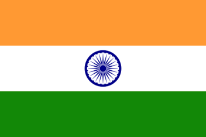Process
We started the project by identifying our problem and scoping our problem statement to focus on a single city in India, Mumbai. Throughout our journey we decided to focus on India, because its high level of pollution, large popluation without access to clean water, lack of education on clean water standards, and high level of humidity. Mumbai has 18.4 million urban city dwellers and thus a prime city for potential implementation
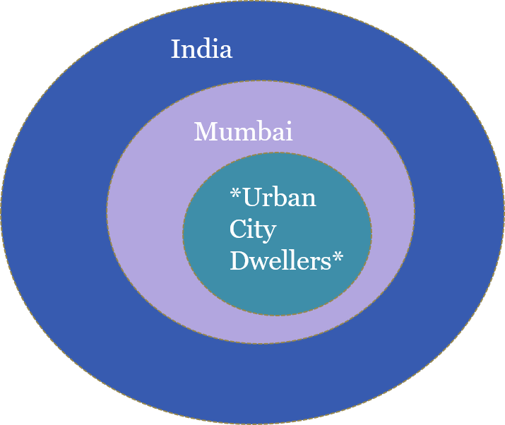 Our target population was Urban City Dwellers in Mumbai India.As we traveled from country to country we worked with locals to better understand their clean water standards and solutions. We sought out the solutions the local spoke of coupled with access to the internet (no access onboard the ship) to better define potential solutions for Mumbai, India. Unfortunately the rocking of the boat and extensive traveling caused my computer and hard-drive to crash soon after the voyage, losing the research and pictures for the project. I was only able to recover our final powerpoint from teammate, Christian Lowe.
Our final solutions:
- 1. UTEC Peru Billboard
- 2. Tarp-Sanitation
- 3. Solar Water Bottles
1. UTEC Peru Billboard
The UTEC Billboard was initially founded by students at UTEC in Peru. We learned about this solution from a student on board the Semester at Sea ship from Peru. The billboard condenses humidity to produce potable water. At maximum efficiency the billboard can produce 100 liters of water a day. Each billboard costs $1600 USD with setup.
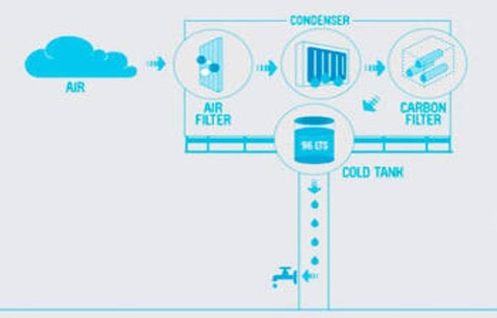 Clean water billboard (source)This clean-water solution would be perfect in the humidity of Mumbai. Additionally the high population density works well with advertisements on the billboard supporting clean water and/ or bringing in revenue such that the billboard pays for itself. We planned to place our limited water in water bottles that not only advertised for clean water, but reinforced our solar water bottle model.
2. Tarp-sanitation
The tarp-sanitation model we learned about while on-site in Cochin, India. The model is implemented during monsoon season. Water is passed through layers of cloth and cuts down on pollutants in the water. The tarp-sanitation model is recommended by the World Health Organization, in part because of its conveience and effect of reducing risk of cholera by 90%
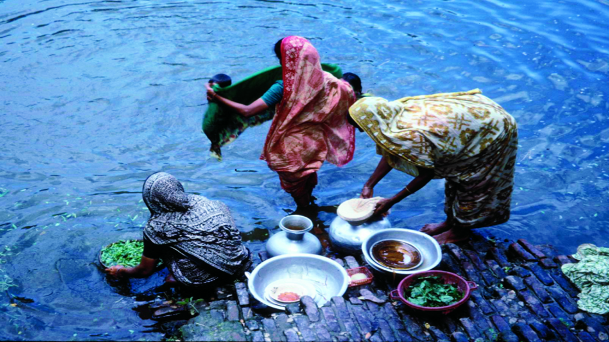 Women in Cochin, India demonstrating the tarp-sanitation model. Source: Christian LoweThe model was an additional solution mainly because of the cultural barriers. Our water bottle and billboard solution may not work well due to cultural difference and persuasion to adapt to new methods. The tarp-sanitation model has been used in India, and we speculate will be adopted quicker than our other solutions. Furthermore, a common garment in India, is a Sari and can be recylced to act as the tarp filter.
2. Solar Water Bottles
The Solar water disenfection (SODIS) water bottles utilize transparent PET bottles to make biologically contaminated safe to drink. We learned about the SODIS solution while traveling through South Africa. The SODIS water bottle solution has been used primarily in the townships. We thought it would be a unique opportunity to bring to India. The SODIS bottles are recyclable and can be reused many times. However, if not used properly they can create waste. The disenfection process is outlined below.
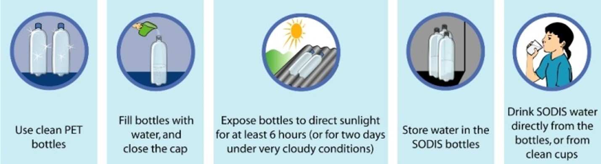 Solar water disenfection (SODIS) process (source)Our goal with the SODIS method was to increase education and provide a solution that can be easily implemented. Our water bottles would hold advertisements to help pay for the bottle as well as an educational piece explaining how to properly disinfect water using the bottle. Our calculations landed a PET water bottle at 0.074 USD. Thus providing a cheap solution to water disinfection.
Implementation Plan
We created an implementation plan to better understand the barriers and costs to provide our solutions. The numbers were rough considering we did not have internet aboard the ship.
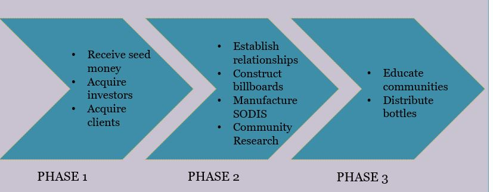 Implementation plan broken up into phases Gant chart of the first year of implementation
Gant chart of the first year of implementation
Our numbers are very rough estimates. The costs of startup, monthly expenses for the billboard, and revenue with spending on various expenses such as salaries, risk, research and development were calculated.
Startup costs
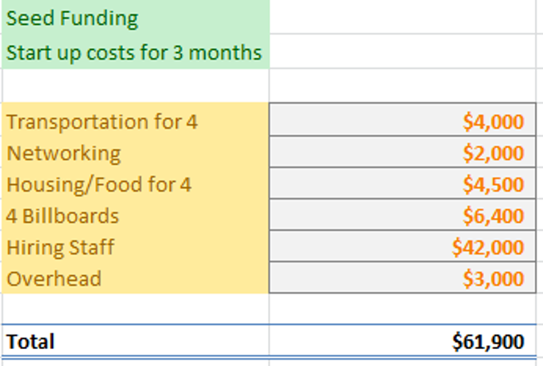 Start up associated costs Monthly revenue of a billboard/h6>
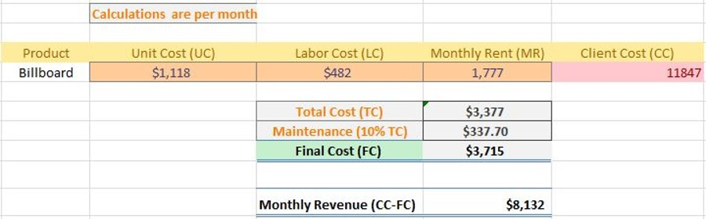
Start up associated costs
Revenue of a single billboard with spending on assorted costs
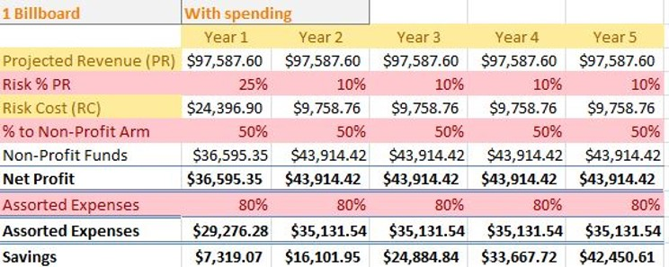
Projected revenue for single billboard
Although we were not big proponents of creating a ton of plastic waste, we ran the numbers on our plastic bottle solution as it would ultimately keep more people healthy and help educate the population on safe water practices and access.
Bottle distribution over 5 years with revenues coming from billboards
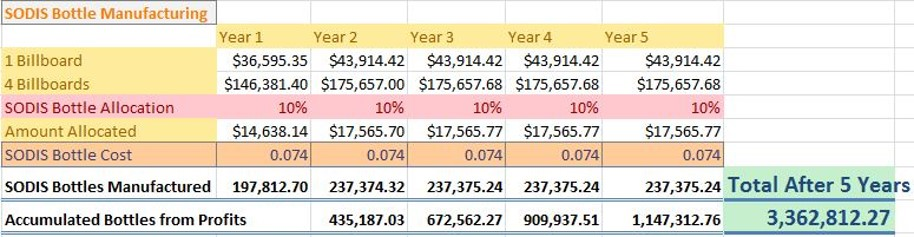 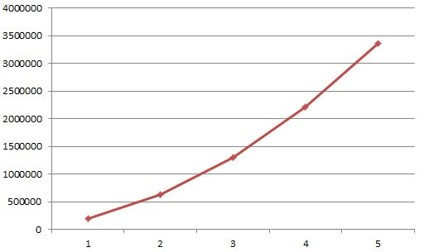 Bottle distribution and manufacturing costs with revenue coming from 1 billboard or 4 billboards, 10% of revenues from billboards spent on water bottles.Conclusion and Future Work
The clean water project was never actually implemented, but laid the foundation for future endeavours into healthcare education. We learned about various different clean water solutions practices around the world from textbook and local citizens. Our work gave us deeper insight into the clean water crisis at hand, and allowed us to develop an understanding of barriers preventing clean water solutions. We now have a better understanding of the process needed to create impactful solutions.
SWOT Analysis of our solutions
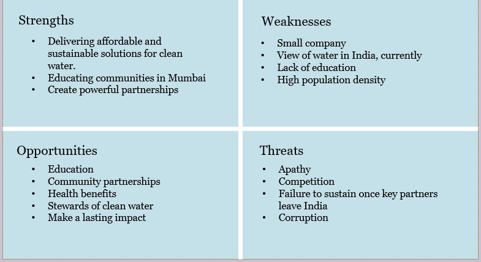Although, we may never implement this exact plan. I hope it will lead to further opportunities working with clean water solutions and healthcare education. I want to start working towards implementation of a single clean water solution and scope it down so it's more readily attainable.